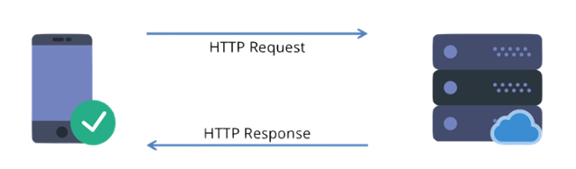
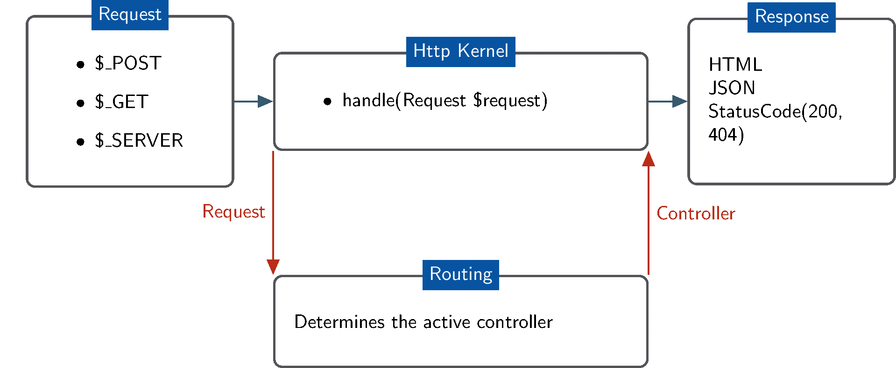
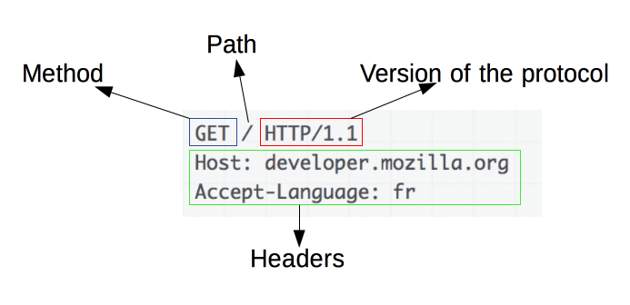
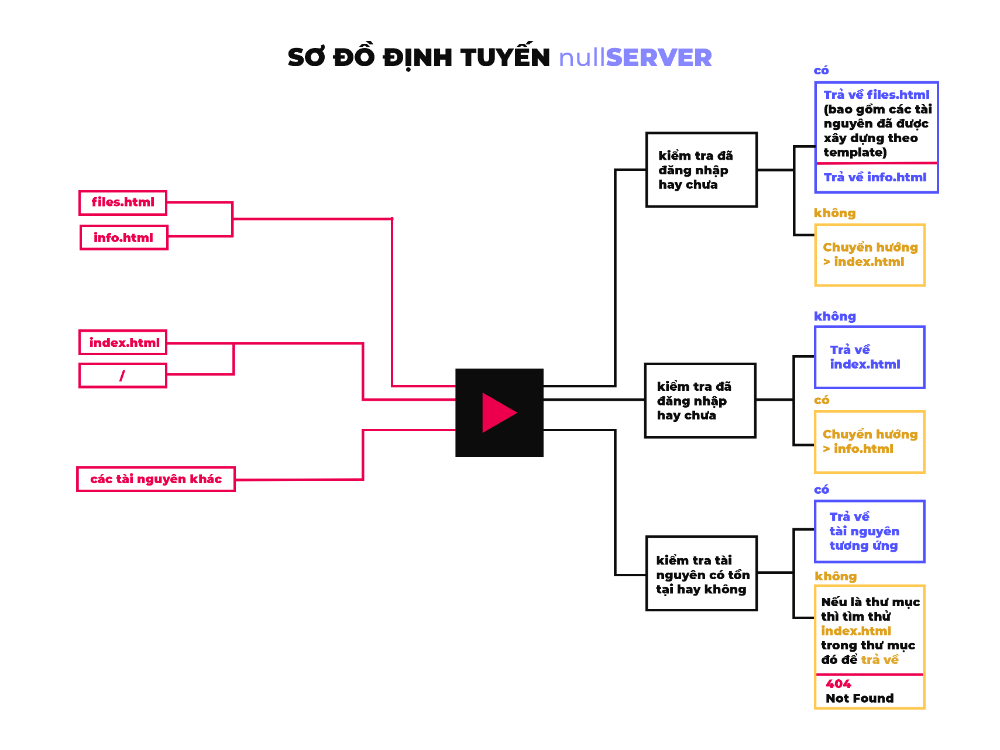

MÔ HÌNH HOẠT ĐỘNG

Về phía Client
Máy khách gửi một yêu cầu đến máy chủ một gói dữ liệu gồm phương thức mà máy khách muốn yêu cầu đến máy chủ, URI (đường dẫn đến tài nguyên) và phiên bản của giao thức HTTP. Tiếp theo đó là các headers (thông điệp MIME) chứa các thông tin về yêu cầu của máy khách, thông tin về máy khách…
Về phía Server
Máy chủ phản hồi với một dòng trạng thái, bao gồm phiên bản giao thức HTTP, mã trạng thái (status code). Tiếp theo đó là các headers (thông điệp MIME) chứa các thông tin về server và về nội dung dữ liệu trả về. Cuối cùng là gửi trả lại cho máy khách nội dung mà máy khách yêu cầu (nếu tồn tại).
Định tuyến

Khi nhận được một yêu cầu từ máy khách, server sẽ xử lý yêu cầu để xác định đường dẫn của tài nguyên mà máy khách muốn truy cập, kiểm tra tài nguyên đó có tồn tại và được quyền truy cập hay không. Nếu tài nguyên tồn tại và được quyền truy cập thì server sẽ trả về một gói tin phản hồi bao gồm mã trạng thái kèm với nội dung tài nguyên. Nếu tài nguyên không tồn tại hoặc không được quyền truy cập thì trả về trạng thái 404 (Not Found).
Việc xác định và điều khiển hướng đi cho Response là nhiệm vụ của phần định tuyến trong server. Các loại tài nguyên thông dụng được trả về Content-Type theo MIME types. Tuy việc định tuyến được thực hiện tự động dựa trên loại tài nguyên, nhưng cũng có một số ngoại lệ, ví dụ như khi truy cập một đường dẫn, bộ phận định tuyến sẽ kiểm tra xem có tồn tại file nào ở đường dẫn đã yêu cầu và có quyền truy cập hay không, nếu không tìm thấy thì sẽ thử xem đường dẫn đó là một đường dẫn đến thư mục và kiểm tra trong “thư mục” đó có tài nguyên HTML nào hay không, nếu có thì sẽ hiển thị tài nguyên đó. Như vậy bộ phận định tuyến ưu tiên các tài nguyên là file trước, nếu không tìm thấy thì sẽ thử xem đường dẫn đó là một thư mục. Điều này sẽ giúp các truy cập có đường dẫn không rõ ràng như “/” vẫn có thể truy cập bình thường vì lúc này server hiểu đường dẫn chính xác là “/index.html”.
Một ngoại lệ khác là điều hướng các truy cập từ “/files.html” hoặc “/info.html” về “/index.html” nếu chưa đăng nhập (không có cookie hoặc cookie không hợp lệ). Cùng với đó là điều hướng những truy cập từ “/index.html” về “/info.html” nếu đã đăng nhập (đã đăng nhập thì không cần đăng nhập lại nên chuyển hướng về trang thông tin).
Xử lý thông điệp
HTTP Requests
GET Requests

Với các thông điệp yêu cầu, chúng ta cần xác định được phương thức, đường dẫn và phiên bản HTTP. Tiếp đó là thông tin của các headers. Trong khuôn khổ của đồ án này, chúng ta cần quan tâm nhất đến các headers: If-Modified-Since và Cookie. Thực hiện cắt xâu để lấy các thuộc tính này.
Header If-Modified-Since là cách để client truy vấn thông tin về sự chỉnh sửa của file sau lần cuối cùng truy cập, client sẽ gửi nội dung của header này là thời gian của lần truy cập cuối cùng. Nếu file đã được chỉnh sửa sau ngày này, server sẽ trả về toàn bộ thông tin như bình thường, nếu file chưa được chỉnh sửa thì máy chủ sẽ chỉ gửi về status code 304 (Not Modified) và không gửi kèm nội dung file, như vậy sẽ tiết kiệm được thời gian trao đổi dữ liệu, client sẽ lấy dữ liệu từ cache để hiển thị.
Header Cookie được client dùng để thông báo cho server biết những cookie (những tập tin được máy chủ gửi đến máy người dùng để ghi nhớ những thông tin trạng thái, hoạt động của người dùng) nào đang được lưu tại client.
Cookie: <cname1>=<cvalue1>; <cname2>=<cvalue2>;...
POST Requests
Tương tự với GET Requests, chúng ta cần đọc các thông tin liên quan. Khác biệt ở chỗ phương thức POST sẽ gửi kèm một đoạn dữ liệu để máy chủ xử lý thông tin. Đoạn dữ liệu này được ngăn cách với header bằng một xâu ngăn cách \r\n.
POST / HTTP/1.1\\r\\n
...\r\n
\r\n
<qname1>=<qvalue1>&<qname2>=<qvalue2>
Từ dữ liệu nhận được từ POST Request có thể lấy ra dữ liệu gồm các trường cần thiết như: username, password, remember. Sau khi có được dữ liệu của các trường trên thì so sánh để xem thông tin tài khoản có hợp lệ hay không. Tên đăng nhập và mật khẩu mặc định là “admin” và “admin”, nếu thông tin đăng nhập khác so với thông tin tài khoản mặc định thì sẽ điều hướng đến 404.html hoặc khi đăng nhập thành công thì điều hướng tới info.html.
HTTP Responses
Status Code 200 – OK
Trả về khi yêu cầu của máy khách được máy chủ đáp ứng thành công. Dữ liệu được yêu cầu sẽ trả về kèm theo HTTP Response.
Ta có thể gửi kèm header **Expires** để quy định ngày hết hạn của tài nguyên này, khi trôi qua ngày hết hạn, client sẽ buộc phải làm mới lại dữ liệu.
Status Code 303 – See Other
Trả về khi máy khách đăng nhập thành công vào trang web này, nó giúp chuyển hướng đến trang thông tin là info.html bằng cách sử dụng phương thức GET.
Status Code 304 – Not Modified
Trả về khi máy khách đã truy cập trang web này trước đó, khi truy cập lại một lần nữa client sẽ gửi header truy vấn If-Modified-Since, nếu tài nguyên này chưa được chỉnh sửa sau lần truy cập gần nhất thì server sẽ trả về status code 304 và không gửi kèm nội dung tài nguyên. Trình duyệt ở client sẽ hiển thị dữ liệu đã lưu ở cache
Status Code 404 – Not Found
Trả về khi máy khách truy cập một tài nguyên không tồn tại, server trả lời lại bằng status code 404 để thông báo rằng tài nguyên này không thể được đáp ứng.
Giao tiếp giữa UI và server
Giao diện được thiết kế theo hướng tối giản để giúp người sử dụng dễ tiếp cận, các thông tin quan trọng nằm ở vị trí dễ nhìn thấy. Riêng trang download được xây dựng sẵn template cho các blocks và đặt một block giữ chỗ trong tập tin HTML để server có thể nhận biết vị trí chèn thông tin các blocks là danh sách các file hiện có trong thư mục “download”. Khi xây dựng trang download theo hướng như thế thì khi có tài nguyên mới được thêm vào thư mục download, người dùng sẽ không cần phải thêm thông tin file thủ công vào file HTML mà việc đó đã được thực hiện tự động nhờ bộ phận quét thông tin file và chèn nó vào trang download cho người dùng cuối.
Kiểu truyền tải
Transfer-Encoding header dùng để thông báo kiểu truyền tải với tài nguyên sắp được server trả lời. Với loại truyền tải chunked, nội dung của tài nguyên được chia thành các “bó” tin nhỏ, server sẽ thông báo về kích thước của mỗi bó tin (ở hệ 16 – hexadecimal) trước khi gửi nội dung của bó tin đó. Sau bó tin cuối cùng, server sẽ gửi kích thước bó tin kết thúc là 0byte sau đó kết thúc bằng \r\n.
Kiểu truyền tải này được sử dụng trong chức năng download, các tài nguyên trong trang download có kích thước lớn hơn hẳn các tài nguyên HTML, CSS hay JS cần thiết để tải trang. Có thể tồn tại những tập tin kích thước rất lớn đến vài trăm MB, vài GB hoặc thậm chí là TB. Để truyền tải những nội dung có kích thước lớn như vậy, server không thể đọc toàn bộ tài nguyên ấy để truyền cho máy khách, việc đó hao tốn rất lớn chi phí vận hành của server. Để giải quyết vấn đề này thì server sẽ thực hiện chia tài nguyên kích thước lớn thành các bó tin có kích thước nhỏ hơn để gửi cho máy khách theo kiểu truyền tải chunked.
TRIỂN KHAI ỨNG DỤNG

Định tuyến
Bộ phận định tuyến được triển khai theo sơ đồ như bên trên
Bộ mã nguồn frontend của đồ án này được lưu trong thư mục web-source nằm cùng đường dẫn với file thực thi của server
Với các truy cập đến “files.html” và “info.html”, bộ phận định tuyến sẽ kiểm tra xem có cookie nào được lưu ở máy khách và cookie đó có hợp lệ hay không. Nếu hợp lệ (tức người dùng đã đăng nhập) thì cho phép truy cập vào các tài nguyên này, nếu không thì chuyển hướng người dùng về lại trang đăng nhập. Ngược lại, với các truy cập đến "index.html” và “/”, server cũng kiểm tra cookie, nếu đã đăng nhập rồi thì sẽ chuyển hướng người dùng sang trang thông tin “info.html”. Với các tài nguyên không nằm trong nhóm ngoại lệ bên trên, server sẽ kiểm tra xem tài nguyên đó có tồn tại hay không, nếu không tồn tại thì thử tìm xem đó có phải thư mục hay không, nếu là thư mục thì trả về file “index.html” trong thư mục đó, nếu không có file “index.html” trong thư mục đó hoặc đó không phải thư mục và tài nguyên đó cũng không tồn tại thì trả về mã lỗi 404 (Not Found) và trả về nội dung “404.html”.
Xây dựng giao diện cho người dùng cuối
Thư mục mã nguồn web-source bắt buộc phải nằm cùng đường dẫn với file thực thi để máy chủ có thể hoạt động chính xác
Với ý tưởng về việc xây dựng một trang download tự động lấy các thông tin file và hiển thị lên giao diện cho người dùng cuối như đã trình bày trong mục Mô Hình Hoạt Động. Việc triển khai xây dựng giao diện dễ giao tiếp với máy chủ được thực hiện như sau:
Block giữ chỗ: <//nullSERVER?FILES?//>
Máy chủ sẽ tìm block giữ chỗ này, sau đó thay thế block này bằng các template đã được xây dựng sẵn như bên dưới.
Một block thông tin file khi được máy chủ chèn vào HTML có dạng như template sau:
<div class="content-box">
<img class="file-icon" src= {đường dẫn đến icon dựa theo file ext}>
<div class="file-details">
<a href= {đường dẫn đến file}> {tên file} </a>
<h2>Size: {kích thước file} </h2>
</div>
</div>
Trong đó, những thuộc tính {màu xanh} được server tự động thay đổi tuỳ theo từng tập tin. Với mỗi file được quét trong thư mục download, server sẽ thêm một template bên trên và điền các thông tin của file vừa quét vào, lặp lại công việc này với tất cả các file trong thư mục download ta sẽ có được danh sách những file có thể được người dùng cuối tải về.
Trang đăng nhập gửi về server 3 trường dữ liệu là username, password và remember với phương thức POST. Các trường dữ liệu trong form đăng nhập là các trường bắt buộc nhập, nếu không có nội dung được nhập thì không thể submit các nội dung này gửi đến máy chủ.
Truyền tải dữ liệu
Transfer-Encoding: chunked được tận dụng tối đa thế mạnh nhờ bộ phận chia tài nguyên cần truy cập thành các bó tin nhỏ, tránh đọc dữ liệu hết cả file trong 1 lần để tiết kiệm tài nguyên hệ thống.
Đối với các file HTML, CSS, JS được truy vấn để hiển thị cho người dùng cuối đều được truyền tải bằng phương thức thông thường (truyền cả file)
Source Code
Xem source code trên GitHub